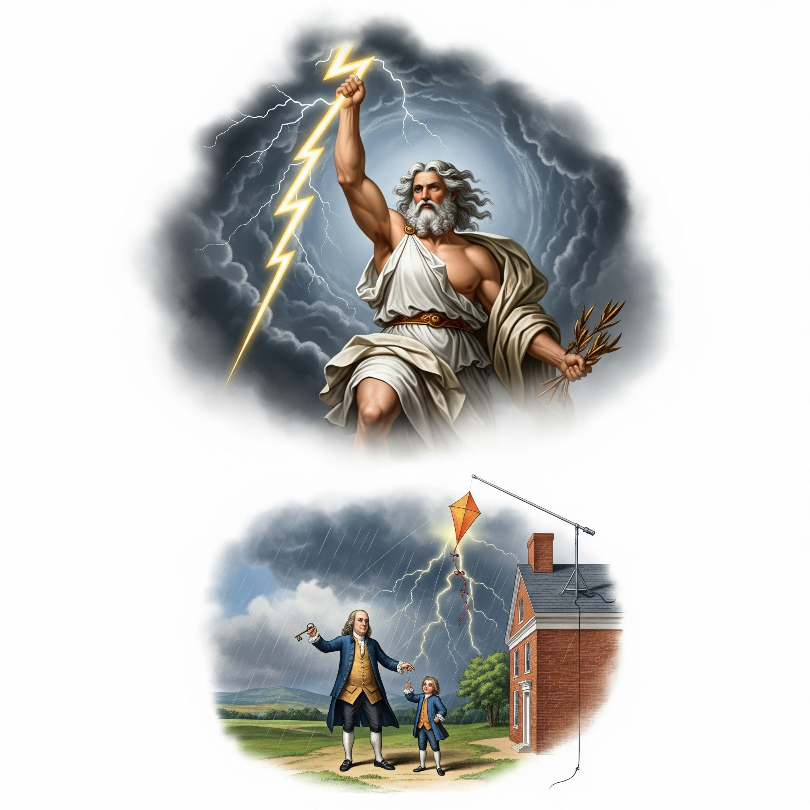
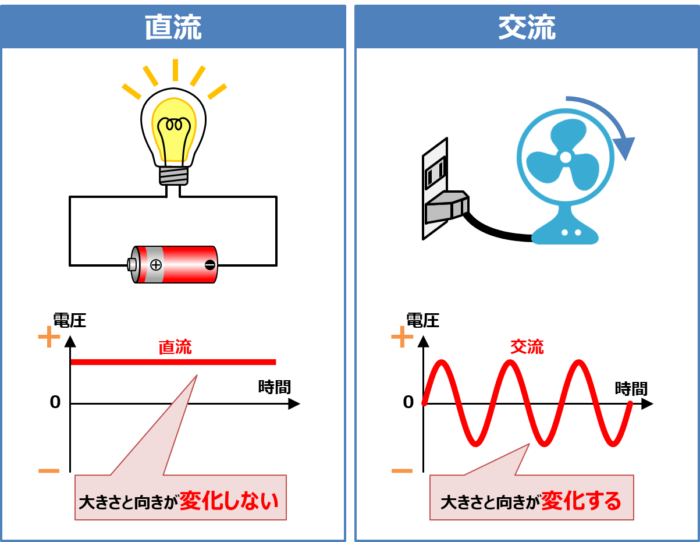

電気現象の発見は古代ギリシャ時代にまで遡ります。紀元前6世紀頃、ミレトスの哲学者タレスが琥珀（ギリシャ語で「エレクトロン」）を毛皮で擦ると軽い物体を引き寄せることを発見しました。これが「電気」という言葉の語源となっています。タレスはこの現象を神秘的な力、あるいは物質に宿る魂の現れとして捉えていましたが、これが人類初の静電気の観察記録となりました。同時代のプラトンやアリストテレスもこの現象に言及しており、古代ギリシャの知識体系の一部となっていました。
古代中国では、紀元前4世紀頃から磁石の性質が知られており、「慈石」（愛する石）や「吸鉄石」と呼ばれていました。戦国時代の『呂氏春秋』には、磁石が鉄を引き寄せる性質についての記述があります。北宋時代（1041-1048年）には沈括が地磁気の偏角を発見し、『夢溪筆談』に詳細な観察結果を記録しました、12世紀には羅針盤が航海に実用化され、郎中の『萍溪詩話』には「方家以磁石磨針鋒」（方位を知る家は磁石で針を磨いて鋭くする）という記述があります。この技術は後にアラビア商人やモンゴル人を通じてヨーロッパに伝わり、大航海時代の礎となりました。
中世ヨーロッパでは、13世紀のペトルス・ペレグリヌス（ピエール・ド・マリクール）が『磁石に関する書簡』を著し、磁石の性質を系統的に研究しました。彼は磁極の概念を確立し、磁石を球状に加工した「テレラ」（地球の模型）を作成して実験を行いました。また、アラビアの学者たち、特にアル・ビールーニやイブン・シーナーなども電気現象や磁気現象に関する観察を記録しており、東西の知識交流が電気学の発展に重要な寄与をしていました。
17世紀から18世紀にかけて、電気の研究が本格的に始まりました。1600年、イギリスの医師ウィリアム・ギルバートが「磁石について」を著し、電気と磁気を明確に区別しました。ギルバートは「electricus」という用語を初めて使用し、地球そのものが巨大な磁石であることを提唱しました。
1660年、オットー・フォン・ゲーリケが摩擦起電機を発明し、より強力な静電気を発生させることが可能になりました。1729年、スティーブン・グレイが電気の伝導性を発見し、導体と絶縁体の概念を確立しました。
1745年、オランダのライデン大学でライデン瓶が発明され、電気を蓄える技術が生まれました。これにより、電気の研究が飛躍的に進歩しました。1752年、ベンジャミン・フランクリンが凧を使った危険な実験で雷が電気現象であることを証明し、避雷針を発明しました。フランクリンはまた、電気の正負の概念を導入し、電気保存の法則を提唱しました。
1785年、シャルル・ド・クーロンがクーロンの法則を発見し、電荷間に働く力を定量的に表現することに成功しました。これにより、電気学が真の科学として確立されました。
19世紀は電気学の黄金時代でした。1800年、アレッサンドロ・ボルタが世界初の電池（ボルタ電池）を発明し、安定した電流の供給が可能になりました。これにより、電気化学の研究が本格化し、ハンフリー・デービーが電気分解による元素の発見を行いました。
1820年、ハンス・クリスチャン・エルステッドが電流と磁場の関係を偶然発見し、電磁気学の基礎を築きました。同年、アンドレ・マリ・アンペールが電流間に働く力を定量化し、アンペールの法則を確立しました。1826年、ゲオルク・オームがオームの法則を発見し、電気回路の基本原理を明らかにしました。
1831年、マイケル・ファラデーが電磁誘導を発見し、発電機の原理を確立しました。ファラデーはまた、電気分解の法則を発見し、電場の概念を導入しました。1864年、ジェームズ・クラーク・マクスウェルが電磁気学を統一する方程式（マクスウェル方程式）を完成させ、電磁波の存在を理論的に予言しました。
1886年、ハインリヒ・ヘルツがマクスウェルの予言を実験で証明し、電磁波の存在を確認しました。これにより、後の無線通信技術の基礎が築かれました。
20世紀は電気技術の実用化と普及の時代でした。1879年、トーマス・エジソンが実用的な白熱電球を発明し、電力事業の基礎を築きました。エジソンは直流電力システムを推進し、1882年にニューヨークで世界初の商用発電所を稼働させました。
一方、1888年、ニコラ・テスラが交流電動機を発明し、ジョージ・ウェスティングハウスと協力して交流電力システムを開発しました。「電流戦争」と呼ばれる直流vs交流の競争の結果、長距離送電に適した交流が勝利し、現在の電力システムの基盤となりました。
1897年、J.J.トムソンが電子を発見し、電気の正体が明らかになりました。1904年、ジョン・フレミングが真空管（二極管）を発明し、1906年にリー・ド・フォレストが三極管を開発しました。これにより、電子工学の時代が始まりました。
1947年、ベル研究所のウォルター・ブラッテン、ジョン・バーディーン、ウィリアム・ショックレーがトランジスタを発明し、エレクトロニクス時代の幕開けとなりました。1958年、ジャック・キルビーとロバート・ノイスが独立に集積回路（IC）を発明し、コンピュータの小型化・高性能化が始まりました。
1960年代には、レーザーの発明や光ファイバー通信の開発が行われ、情報通信技術の革命が起こりました。1971年、インテルが世界初のマイクロプロセッサ4004を開発し、パーソナルコンピュータ時代の到来を告げました。
電力生産の分野では、核分裂型原子炉が重要な役割を果たしています。原子炉はウラン235やプルトニウム239の核分裂反応で発生する巨大な熱エネルギーを利用して蒸気を発生させ、タービンを回転させて発電します。1グラムのウランからは石炭約2.7トンに相当するエネルギーを得ることができ、非常に高いエネルギー密度を持ちます。現在、世界の電力の約10%が原子力でまかなわれており、次世代原子炉（小型モジュラー炉など）の開発が進んでいます。
さらに注目されているのが核融合技術です。核融合は水素の同位体である重水素（デューテリウム）や三重水素（トリチウム）を融合させてヘリウムを生成する反応で、太陽と同じエネルギー源です。核融合は核分裂よりもさらに巨大なエネルギーを放出し、放射性廃棄物をほとんど生成しないため、「究極のクリーンエネルギー」と呼ばれています。しかし、核融合反応を起こすためには1億度以上の超高温と巨大な圧力が必要で、この条件を安定して維持することが技術的な課題となっています。現在、フランスのITER（国際熱核融合実験炉）や日本のJT-60SAなどの大型実験装置で研究が進められており、2030年代には実用化の目途が立つと期待されています。
量子コンピュータの研究では、IBMやGoogleが量子優位性の実証に成功し、新たな計算パラダイムの可能性を示しました。超伝導技術の進歩により、送電ロスのない電力伝送や磁気浮上列車の実用化が進んでいます。
また、ワイヤレス電力伝送技術の発展により、スマートフォンの無線充電など、様々な応用が研究されています。
電気の本質を理解するためには、まず電荷という概念を把握する必要があります。電荷は物質の基本的な性質の一つで、正の電荷と負の電荷の2種類が存在します。原子レベルでは、陽子が正の電荷を、電子が負の電荷を持っています。通常の物質では正負の電荷が釣り合っているため電気的に中性ですが、何らかの原因で電荷のバランスが崩れると電気現象が生じます。
静電気は、物体に電荷が蓄積された状態で生じる現象です。冬場にセーターを脱ぐときのパチパチという音や、下敷きで髪の毛を逆立てる現象は、摩擦によって電子が移動し、物体に電荷が偏って分布することで起こります。この静電気の力は、18世紀にクーロンが発見した「クーロンの法則」によって定量的に表現されます。
一方、電流は電荷の流れを表します。金属などの導体では、自由に動き回れる電子（自由電子）が存在し、電圧をかけることでこれらの電子が一定方向に移動します。この電子の流れが電流の正体です。興味深いことに、電流の向きは慣習的に正の電荷が移動する方向と定義されているため、実際の電子の流れとは逆方向になります。
電場は、電荷の周りに形成される空間の性質で、他の電荷に力を及ぼす領域を指します。電場は目に見えませんが、電気力線として視覚化することができ、正の電荷から負の電荷に向かう矢印で表現されます。この電場の概念は、19世紀のファラデーによって導入され、後のマクスウェルの電磁気学理論の基礎となりました。
電圧は、電気回路において電流を流すための「電気的な圧力」とも呼べる重要な概念です。正確には、2点間の電位差を表し、電荷を一方の点からもう一方の点に移動させるために必要なエネルギーの大きさを示します。水の流れに例えると、電圧は高低差による水圧に相当し、電流は水の流れそのものに対応します。電圧が高いほど、より多くの電流を流すことができ、より大きな電気エネルギーを伝送できます。
電圧の最も劇的な例が雷です。雷は自然界で発生する超高電圧現象で、雲と地面の間、または雲同士の間に数億ボルトもの電位差が生じることで発生します。積乱雲の中では、氷の粒子同士の激しい衝突により電荷の分離が起こり、雲の上部に正電荷、下部に負電荷が蓄積されます。この電荷の偏りにより、雲と地面の間に巨大な電場が形成され、空気の絶縁破壊が起こると、一瞬で大電流が流れて雷となります。雷の電流は数万アンペアに達し、温度は太陽表面の約5倍にもなる3万度に達します。ベンジャミン・フランクリンが18世紀に行った凧の実験は、この雷が電気現象であることを証明し、避雷針の発明につながりました。現代でも、雷のエネルギーを電力として活用する研究が続けられていますが、その瞬間的で予測困難な性質から実用化は困難とされています。

電気には大きく分けて直流（DC: Direct Current）と交流（AC: Alternating Current）の2種類があります。
直流は、電流が常に一定の方向に流れる電気です。電池や太陽電池から供給される電気は直流で、電子機器の多くは内部で直流を使用しています。直流の特徴は、電圧と電流が時間とともに変化しないことです。スマートフォンやノートパソコンなどの携帯機器、LED照明、電気自動車のモーターなどが直流で動作します。また、直流は長距離送電において送電ロスが少ないという利点があり、近年では高圧直流送電（HVDC）システムが注目されています。
交流は、電流の方向が周期的に変化する電気です。日本では1秒間に50回または60回（50Hzまたは60Hz）の頻度で電流の方向が変わります。家庭のコンセントから供給される電気は交流で、変圧器を使って電圧を簡単に変換できるという大きな利点があります。発電所で作られた高電圧の電気を、送電線で効率よく運び、各家庭では安全な電圧に下げて使用することができます。この変圧の容易さが、交流が世界の電力システムの標準となった理由です。
